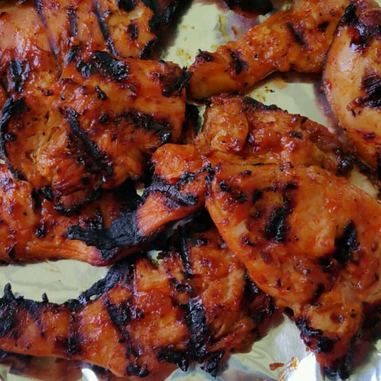

Chicken Tortilla Soup

Description
This homemade BBQ sauce recipe for chicken is not-too-sweet, not-too-tangy, and finishes in almost a glaze. Everyone loves it! It would also be great on pork chops or ribs.
Ingredients
- 1 ½ tablespoons olive oil
- ¼ cup diced onion
- 2 cloves garlic, minced
- 5 tablespoons ketchup
- 3 tablespoons honey
- 3 tablespoons brown sugar
- 2 tablespoons apple cider vinegar
- 1 tablespoon Worcestershire sauce
- salt and pepper to taste
- 2 skinless, boneless chicken breast halves
Steps
- Preheat an outdoor grill for medium-high heat and lightly oil the grate.
- Heat olive oil in a skillet over medium heat. Add onion and garlic; sauté until tender, about 2 minutes. Stir in ketchup, honey, brown sugar, apple cider vinegar, Worcestershire sauce, salt, and pepper; simmer until sauce has thickened slightly, about 1 or 2 minutes. Remove from heat; set aside to cool slightly.
- Dip chicken in sauce to coat on both sides; reserve remaining sauce in the skillet. Transfer chicken onto the preheated grill and cook, turning once, until nicely browned on all sides, about 10 to 15 minutes.
- Return chicken to the skillet with sauce; simmer over medium heat until sticky, about 5 minutes on each side. An instant-read thermometer inserted into the center should read at least 165 degrees F (74 degrees C).
Home